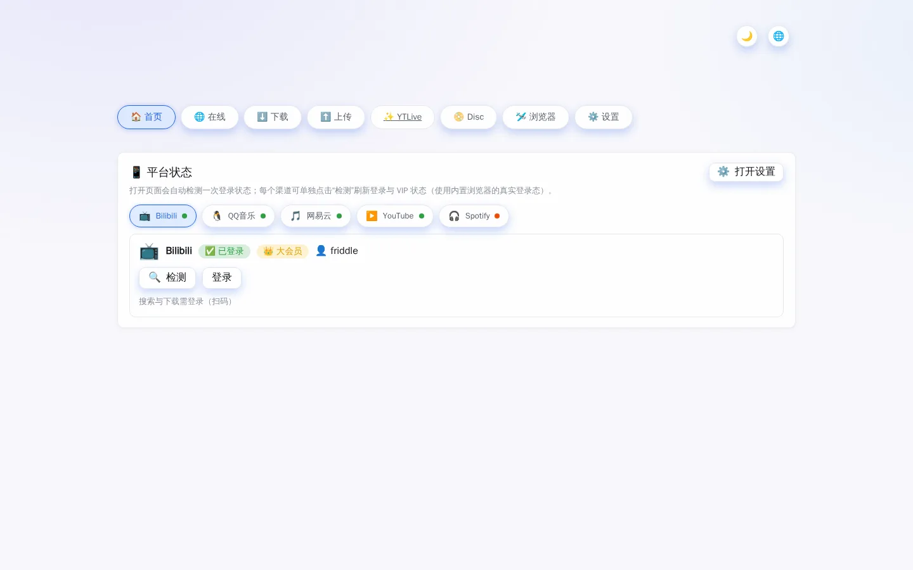
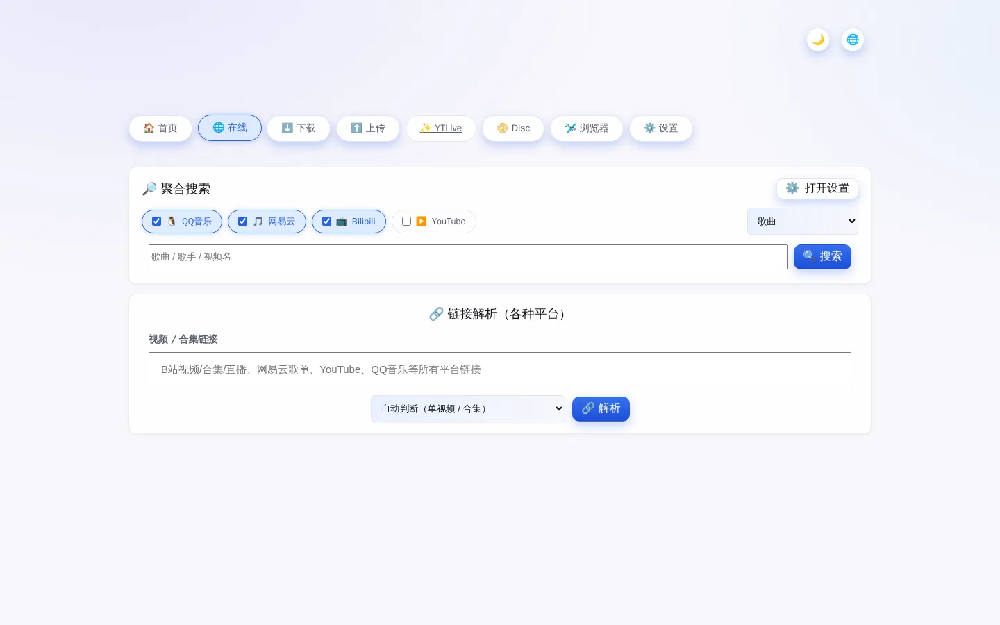
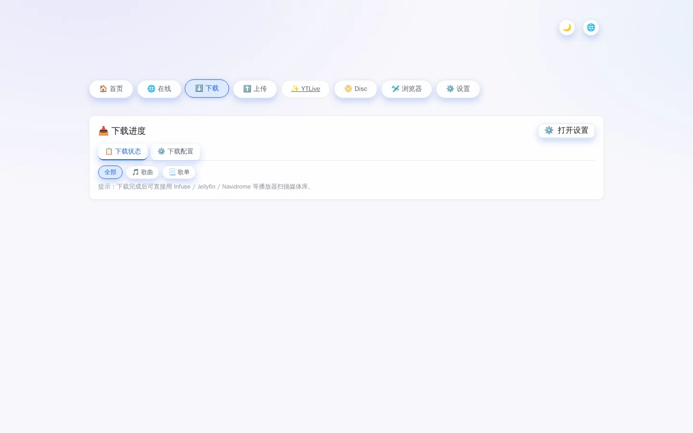
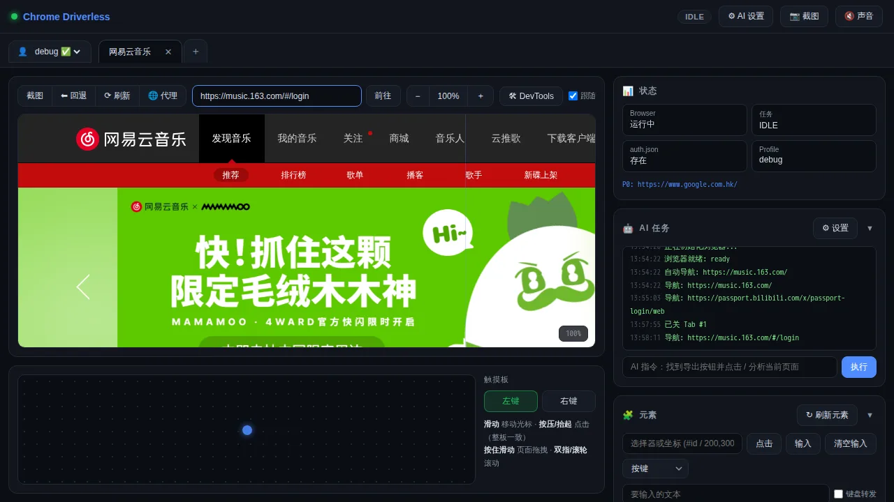
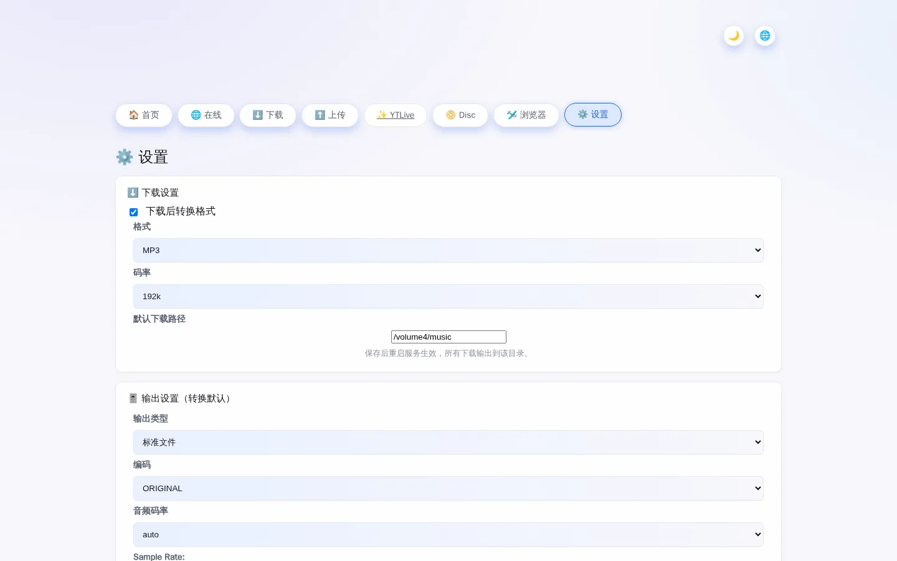

内置反检测浏览器，扫码登录 Bilibili / 网易云 / QQ音乐 / YouTube / Spotify，自动检测登录与 VIP 状态，搜索 · 解析歌单 · 批量下载 · 转码归档，一键跑在你的 NAS 上。
为音乐收藏家打造：从登录到入库的完整闭环。
首页实时展示各平台登录态与 VIP 徽标（大会员 / 豪华绿钻 / 黑胶 VIP），每个渠道独立「检测」按钮。
chrome-driverless 隐藏自动化特征：扫码、账号登录、过验证码都在真实浏览器里完成，登录态自动导出 cookies。
多平台勾选搜索歌曲/歌单；粘贴任意平台链接（歌曲、歌单、合集、视频）一键展开为逐条下载任务。
逐条任务独立进度、失败原因可读、一键重试；QQ音乐走浏览器 vkey 直链，其余平台 yt-dlp + cookies 兜底。
下载后自动转换 MP3 / FLAC / M4A 并写入封面、歌词等标签；每次下载可覆盖默认格式与子目录。
镜像内置下载引擎与无头浏览器，docker compose up -d 即用；支持 PUID/PGID 与只读容器等安全加固。
中 / 英 / 土 / 西 / 德 / 法 界面即点即切，明暗主题随心换。
下载完成后可直接被 Navidrome / Jellyfin / Infuse 扫描，成为你私有音乐流的源头。
真实界面截图，编号标注了关键操作位置。

1 2 3 4 5
1 2 3 4 5
1 2
1 2 3 4
1 2 3只需 Docker，一条命令跑起来。
新建目录并写入以下内容（音乐会下载到 ./downloads）：
services:
web:
image: ghcr.io/friddle/ytb-dl-web:main
container_name: gharmonize
ports:
- "5174:5174"
environment:
- PORT=5174
- MEDIA_DOWNLOAD_DIR=/music # 默认下载目录（容器内路径）
- YTDLP_COOKIES=/data/cookies/cookies.txt
# 中国平台下载代理（按需填写，留空直连）
# - HTTP_PROXY=http://192.168.1.2:7890
# - HTTPS_PROXY=http://192.168.1.2:7890
# - NO_PROXY=127.0.0.1,localhost
volumes:
- ./downloads:/music # 音乐输出目录
- ./data:/data # cookies 等数据
restart: unless-stoppeddocker compose up -d镜像来自 ghcr.io/friddle/ytb-dl-web，内置浏览器（chrome-driverless）已打包，无需额外配置。
浏览器访问 http://你的NAS的IP:5174/，完成 —— 下一步去登录平台。
| 变量 | 说明 |
|---|---|
PORT | 服务端口，默认 5174 |
MEDIA_DOWNLOAD_DIR | 默认下载目录（容器内路径，需挂载） |
YTDLP_COOKIES | 下载用 cookies.txt 路径，登录态自动写入 |
HTTP_PROXY / HTTPS_PROXY | 中国平台下载代理，留空直连 |
PUID / PGID | 容器内用户/组 ID（NAS 权限对齐） |
GHARMONIZE_ALLOWED_ORIGINS | 反向代理场景下的 Origin 白名单 |
所有登录都在内置浏览器中完成，密码不经过第三方。
进入「🏠 首页」，页面会自动检测一次所有平台的登录状态。
内置浏览器自动打开对应平台的登录页：Bilibili / QQ音乐 / 网易云 用手机 App 扫码；YouTube / Spotify 直接输入账号（支持 Google 登录）。
卡片显示 ✅ 已登录 与 VIP 徽标（大会员 / 豪华绿钻 / 黑胶VIP）即成功。登录态会自动导出 cookies.txt 供下载引擎复用（启动时与每 6 小时同步）。
| 平台 | 登录方式 | VIP 标识 |
|---|---|---|
| 📺 Bilibili | 手机扫码 | 大会员 |
| 🐧 QQ音乐 | QQ / 微信扫码（微信自动合成 uin） | 豪华绿钻 |
| 🎵 网易云 | 扫码 / 账号 | 黑胶 VIP |
| ▶️ YouTube | Google 账号登录 | Premium |
| 🎧 Spotify | 账号登录 | Premium |
三种方式，从找歌到入库。
「🌐 在线」页勾选平台 → 输入歌名/歌手 → 搜索 → 勾选结果批量下载。搜索无需登录。
把 App 里分享的歌曲 / 歌单 / 合集 / 视频链接粘进「链接解析」→ 点「解析」→ 整张歌单自动展开为逐条任务 → 一键全部下载。
「⬇️ 下载」页查看逐条进度，失败可重试；每次下载可指定输出格式与子目录。默认格式/码率/路径在「⚙️ 设置」配置，下载完成后自动写入封面与歌词标签。
音乐在 MEDIA_DOWNLOAD_DIR 目录就绪后，直接用 Navidrome / Jellyfin / Infuse 扫描为音乐库，全屋串流。
中国平台（QQ音乐/网易云/B站）无需登录即可搜索；下载 VIP 音源需要登录对应平台账号。YouTube 与 Spotify 需要登录。
可以。在内置浏览器中登录你的大会员 / 豪华绿钻 / 黑胶 VIP 账号，系统检测到 VIP 状态后即可下载对应音源。
docker compose pull && docker compose up -d。镜像由 CI 自动构建推送，应用启动时也会静默检查新版本并提示。
全部在你自己的 NAS / 服务器：音乐输出目录与浏览器 Profile（登录态）都通过本地 volume 挂载，不上传任何第三方。